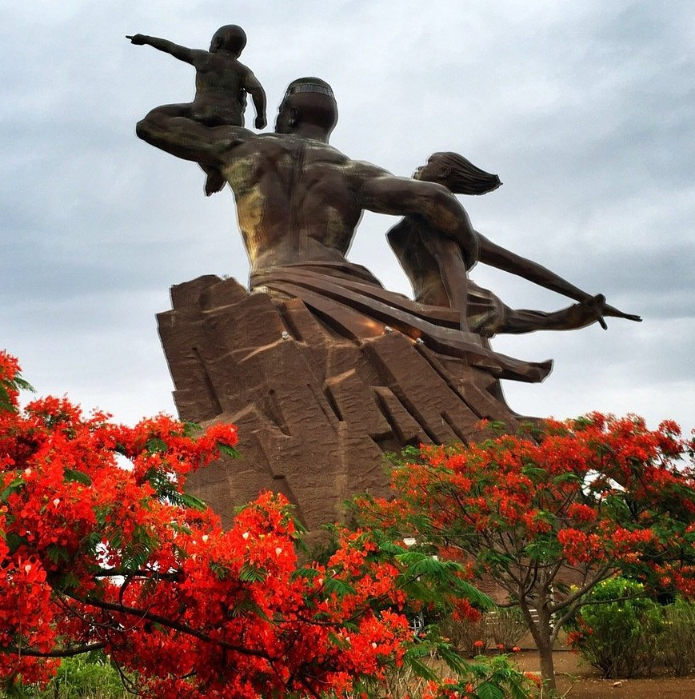

Dakar n'est pas seulement la capitale du Sénégal, c'est une presqu'île dynamique où l'accueil chaleureux (la Téranga) est un mode de vie. Entre ses marchés colorés, ses plages de surf et son histoire poignante, elle offre une expérience inoubliable.

Le Monument de la Renaissance Africaine, l'un des plus hauts du monde.
Pourquoi visiter Dakar ?
La ville regorge de trésors cachés. Voici trois raisons de choisir cette destination :
Le dépaysement : À seulement quelques heures de l'Europe, un soleil présent toute l'année.
La culture : Une scène artistique bouillonnante avec la Biennale de l'Art Africain.
L'histoire : Un passage obligatoire par l'île de Gorée pour comprendre le passé.
Une ville entre Terre et Mer
Située sur la presqu'île du Cap-Vert, Dakar est entourée par l'océan Atlantique, ce qui lui confère un climat agréable et des paysages maritimes exceptionnels.